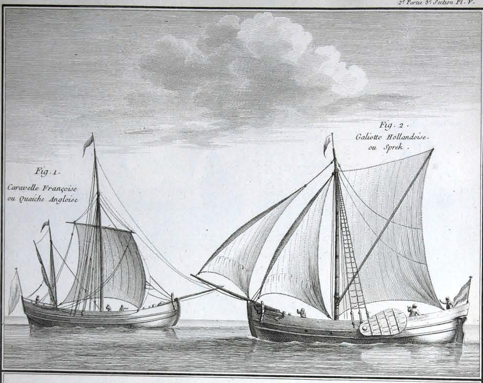
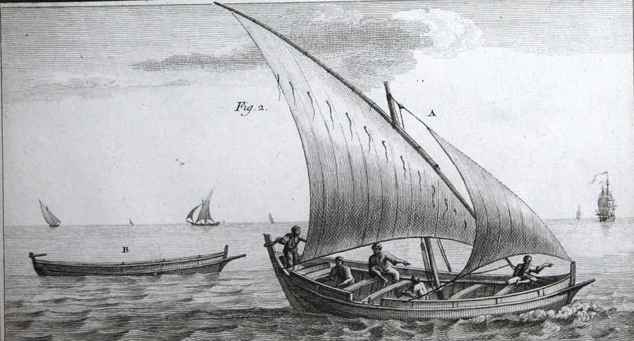

Мы в основных чертах уже разобрались с происхождением слова каравелла, но в этой теме есть несколько интересных поворотов, так что скажем еще пару слов.

Иллюстрация из книги Duhamel du Monceau, Traite general des pesches, vol.2
Морские историки иногда вспоминают, как правило с иронией, гипотезу историографа французского флота Огюстена Жаля о происхождении интересующего нас термина: caravella означает cara-bella, «красивая фигура». Об этом Жаль говорит в «Морской Археологии», это же повторяет в «Морском словаре»:
…le mot Caravella nous semblait composé de deux mots, Сara, figure, et Bella, belle, le navire qui portait ce nom ayant en effet, comparativement aux autres vaisseaux ronds, une forme assez gracieuse et une allure élégante.
Слово Caravella, как нам кажется, состоит из двух слов: Сara, фигура, и Bella, красивая; корабль, который так называется, имеет по сравнению с другими круглыми кораблями довольно грациозную форму и элегантный ход.
A. Jal, Glossaire nautique (1848)
Может показаться странным, но такая « этимология» вполне в духе французского языка. В словаре современного арго отмечается, что каравелла (caravelle) – это элитная проститутка, работающая в отелях, американских барах, театрах и т.п., а также на вокзалах и в аэропортах (странное понятие о проститутках de luxe):
CARAVELLE, n. f. Prostituée de luxe qui se fait racoler (hôtel, bar américain, théâtre, etc) ; prostituée racolant dans halls de gare et aéroports.
Bob: Dictionnaire d'argot
Так что приведенный в эпиграфе отрывок из Агнивцева вполне себе прозрачный намек.
Видимо, лишь по созвучию предлагается и другой вариант происхождения слова каравелла – «барка с парусами»:
CARAVELLE : (portugais caravo a vela, barque à voiles).
Glossaire des termes de la marine ancienne
Интересные метаморфозы со словом каравелла произошли в турецком языке. Мы уже отмечали, что в результате непонятных причин термин karavela изменился на karavana. Видимо, по ассоциации, потому, что на турецком karavana означает большое плоское, обычно деревянное, блюдо. А в Ливане, который воспринял в своем диалекте арабского много заимствований из турецкого, qarawâna стало названием местного супа, похлебки, подаваемой в таких блюдах. Мне однажды пришлось отведать такого супа где-то в апельсиновых рощах Южного Ливана в компании отчаянных молодых флибустьеров.
Если мы вернемся к схеме распространения слова каравелла в европейских языках (см. предыдущий пост), то отметим как бы двухэтажное ее строение: на первом этаже эволюция французского термина caravelle, на втором – превращения в основных европейских языках французского же слова carvelle.

Иллюстрация из книги Duhamel du Monceau, Traite general des pesches, vol.1
Второй из этих терминов появился во французском языке в первой половине XV века в значении: судно для ловли креветок (navire à crevette). Созвучие родного слова с заимствованным здесь тоже сыграло свою роль. В дальнейшем, когда уже с Севера Европы пришло понятие корпуса, построенного вгладь, встык (карвель) в отличие от корпуса, построенного внакрой, в клинкер, (1515, vesseaulx à cline et à carvelle), это только закрепило позиции термина carvelle (впрочем, наряду с caravelle).
Сказанным, конечно, не исчерпываются все приключения термина каравелла, мы, возможно, еще обратимся к ним, когда будем дальше рассказывать об этом корабле.